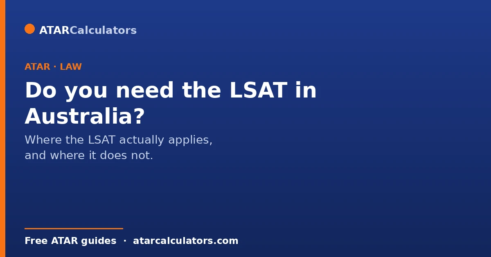
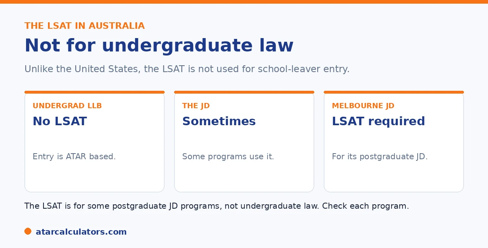

Here is the short version. For undergraduate law in Australia, you do not need the LSAT. Undergraduate entry is based on your ATAR, not an admissions test. The LSAT is used by some postgraduate Juris Doctor, or JD, programs, such as the Melbourne JD, alongside your university results. So unlike the United States, most Australian law students never sit the LSAT.
The LSAT looms large in American law, so students often assume they need it here. For most Australian law students, that is simply not true.
Below is exactly where the LSAT applies, and where it does not. To explore your options, use our law ATAR calculator.
Key takeaways
- For undergraduate law, you do not need the LSAT.
- Undergraduate entry is based on your ATAR.
- The LSAT is used by some postgraduate JD programs.
- The Melbourne JD is one example that uses it.
- Most Australian law students never sit the LSAT.
- It is not the gatekeeper it is in the United States.
Undergraduate law: no LSAT
Let us clear up the main confusion. For an undergraduate Bachelor of Laws in Australia, you do not sit the LSAT. Entry is based on your ATAR, like other undergraduate degrees.

So if you are going straight from school into law, your ATAR is what matters, not an admissions test. This is quite different from the American system, where the LSAT is central.
The JD and the LSAT
The LSAT does appear, but only for some postgraduate study. The Juris Doctor, or JD, is a postgraduate law degree taken after any bachelor's degree. Some JD programs use the LSAT as part of their selection.
The Melbourne JD is a well-known example. School leavers can secure an assured place with a high ATAR. Graduates apply with their university results and the LSAT. So the LSAT belongs to the postgraduate route, not undergraduate law.
Want to see your law options?
Try the law ATAR calculator →Why the confusion exists
The confusion is understandable. American law is entirely postgraduate, and the LSAT is its main entrance test, so it features heavily in films and shows. Many students absorb that picture without realising it does not match Australia.
In Australia, law is mostly undergraduate and ATAR-based, with the LSAT only for some postgraduate JD programs. So most students here never encounter it.
So do you need the LSAT?
For most students, no. If you are entering law straight from school through an undergraduate degree, you do not need the LSAT at all. Your ATAR is the requirement.
You would only need the LSAT if you choose a postgraduate JD program that needs it, after a first degree. So check the specific program. See our law ATAR guide.
It helps to match the requirement to your actual route. This is because the LSAT only enters the picture for one of them. If you are heading into law straight from Year 12 through an undergraduate Bachelor of Laws, whether standalone or combined, your ATAR is the entry measure. There is no LSAT to sit. The test simply does not apply. The LSAT becomes relevant only if you take the postgraduate path, completing any bachelor degree first and then applying to a Juris Doctor. Even then, it applies only at the programs that use it. JD admission is typically based on your university GPA and, at some institutions, the LSAT. So the honest answer depends entirely on your timeline. A school leaver planning direct entry can put the LSAT out of mind completely. A student who expects to enter law after another degree, or who is keeping the graduate route open as a backup, should check whether their target JD programs need the LSAT. If they do, factor it into your planning during that first degree. The confusion usually comes from importing the American model, where the LSAT is near-universal for law. In Australia it sits behind one specific pathway, not law as a whole. Identify which route you are on, and the answer becomes clear.
What the LSAT is
The LSAT (Law School Admission Test) is a reasoning test used in law admissions. In Australia, it is mainly associated with graduate JD programs rather than undergraduate law, and it assesses logical and analytical reasoning rather than legal knowledge.
Because it tests reasoning, no school subject directly prepares you for the LSAT. It is a distinct task from your ATAR, relevant chiefly if you are heading toward a graduate JD that uses it.
Which universities use it
Some Australian universities use the LSAT as part of admission to their graduate JD programs, the University of Melbourne’s JD being the best-known example. Undergraduate law programs generally do not require it.
So whether the LSAT is relevant to you depends on your pathway. If you are aiming for a graduate JD at a university that uses it, it matters; if you are aiming for undergraduate law, it usually does not. Check each program’s requirements.
Preparing for the LSAT
If your pathway involves the LSAT, it rewards preparation, since familiarity with its reasoning question types and timing improves performance. Students typically prepare during their undergraduate degree, before applying for a JD.
As with other admissions tests, practising under timed conditions helps most. But this only applies if a JD that uses the LSAT is your goal, so confirm your pathway before investing in LSAT preparation.
If you want undergraduate law
If your goal is undergraduate law straight from school, you generally do not need the LSAT. Entry rests on your ATAR, with any adjustment factors, through the usual admissions process. The LSAT belongs to the graduate JD route.
So do not worry about the LSAT if you are pursuing an undergraduate LLB. Focus on your ATAR and subject choices instead, and revisit the LSAT only if you later consider a graduate JD. See subject strategy for law.
Common questions
Do you need the LSAT for law in Australia?
For undergraduate law, no. Entry is based on your ATAR, not the LSAT. The LSAT is used by some postgraduate Juris Doctor programs, such as the Melbourne JD. Most Australian law students never sit it.
Is the LSAT used for undergraduate law?
No. Undergraduate law in Australia is ATAR-based, with no LSAT needed. The LSAT only appears in some postgraduate JD programs, taken after a first degree. So school leavers entering law do not need it.
When is the LSAT needed?
Only for some postgraduate Juris Doctor programs that use it in selection, such as the Melbourne JD for graduate applicants. It is not part of undergraduate law entry, which is based on your ATAR.
Does the LSAT affect my ATAR or law entry?
Not for undergraduate law, which is ATAR-based. The LSAT is separate and applies only to some postgraduate JD programs. So for most students entering law from school, the LSAT plays no part at all.
Why do people think you need the LSAT for law?
Because American law is entirely postgraduate, with the LSAT as its main entrance test, and it features in films and shows. Australia is different: law is mostly undergraduate and ATAR-based, with the LSAT only for some JD programs.
Explore your law options
See realistic pathways into law based on your ATAR. Free, and no signup.
Open the law ATAR calculator →Related guides
This guide is general information for students and parents, not formal admissions advice. ATAR cut-offs, degree structures and entry rules vary by university and change every year. The LSAT applies only to some postgraduate JD programs, not undergraduate law. Any figures here are approximate and based on recent years. So always confirm the current details with each university and your state admissions centre (such as UAC, VTAC, QTAC, SATAC or TISC). Reviewed by the ATARCalculators Editorial Team.